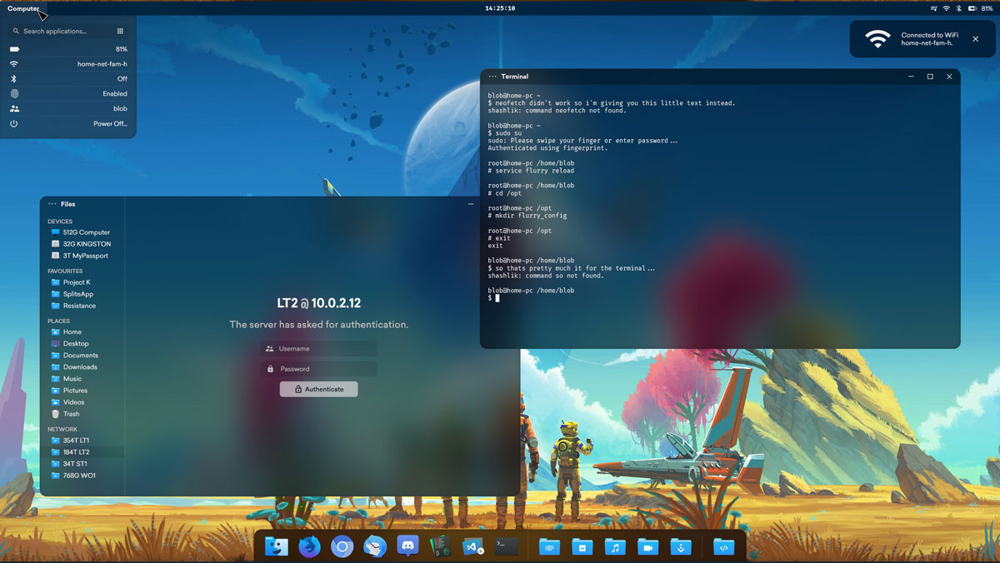
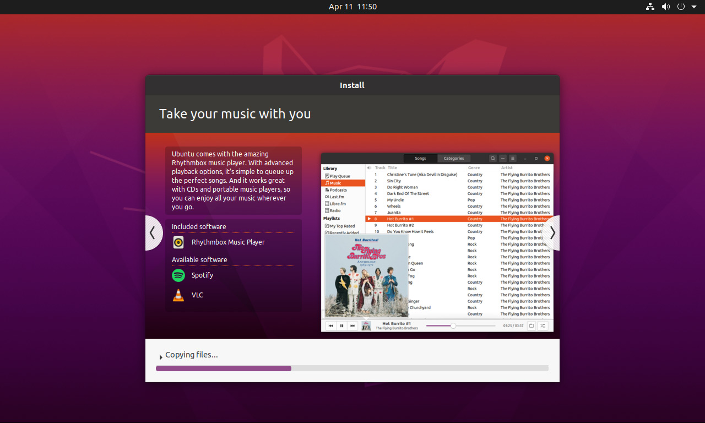
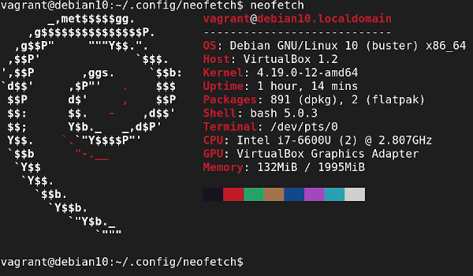

{% extends "../_base_template.html" %}
{% block title %}Lektion 2 - Linux-Basics{% endblock %}

{% block sections %}
<section data-markdown>
<textarea data-template>
# <i class="fas fa-graduation-cap"></i> M347 - Linux-Shell-Basics

## Heutiges Ziel

Für den Umgang mit "Linux-Containern" müssen Sie sich ein *klein wenig* mit Linux auskennen.

* Sie wissen, was "Linux" ist
* Sie können sich im Linux-Verzeichnisbaum bewegen und kennen die Unterschiede zum Windows-Verzeichnisbaum
* Sie wissen, was ein "Mount Point" ist
* Sie kennen die "absolute basics" der Linux Shell (bash)
* Sie kennen die wichtigsten Befehle auf einem debian-basierten Linux-Befehl

</textarea>
</section>

<section data-markdown>
<textarea data-template>
# <i class="fab fa-linux"></i> Was ist Linux?

Kurze Frage in die Runde:

* Wer kennt Linux?
* Was ist das?
* Unterschiede zu Windows?

</textarea>
</section>

<section data-markdown>
<textarea data-template>
# <i class="fab fa-linux"></i> Was ist Linux?

<div style="display: flex;gap:5px;">

<div style="flex-grow: 1;">

* Linux ist ein **Betriebssystem**, wie Windows auch.
* Es wurde **1991** von **Linus Torvalds**, damals Student an der Universität Helsinki, geschrieben und bis heute
  von ihm verwaltet
* Mittlerweile gibt es enorm viel Software für Linux, ähnlich wie dies für Windows der Fall ist
* Es haben sich Hunderte von **Linux-Distributionen** entwickelt, also "Gesmat-Pakete", welche 
  Linux inkl. Desktop-Sofware vorkonfiguriert und einfach installierbar ausliefern
* Die bekanntesten Distributionen sind **Debian**, und das darauf basierende **Ubuntu-Linux**, sowie
  **Arch-Linux**-basierte Distributionen.
* Lange Zeit war Linux ein Nischen-System für Bastler und Freaks - Mittlerweile ist Linux aber
  im Mainstream angekommen und sehr bedienerfreundlich geworden - aber immer noch "Hackbar" geblieben.
* Linux ist **vor allem auf Server und in der Cloud sehr verbreitet**
* <i class="far fa-hand-point-right"></i> **Container-Technologien wie Docker laufen nur auf Linux-Systemen**<br>(ausser mit "Hacks" auch auf Windows/Mac)
</div>


</div>

<div style="display:flex;gap:5px; width:100%">
  
  
  
</div>

</textarea>
</section>

<section data-markdown>
<textarea data-template>
# <i class="fab fa-linux"></i> Linux und Container

**Linux-Container** sind eine Technologie, welche, wen wundert's, ausschliesslich unter Linux
funktionieren. Auf Windows/Mac wird jeweils ein Linux-Host-System in einer virtuellen Maschine gestartet.

**Linux-Container** sind nichts anderes als abgeschottete Prozesse: Prozesse, welche vom (Host-)Kernel
gestartet werden, aber nur sehr limitierten Zugriff auf System-Ressourcen haben.

## Linux-Shell

Linux-Container laufen in den allermeisten Fällen "headless", also ohne grafische Oberfläche:
Man kommuniziert mit den Containern interaktiv in einer **Linux-Shell**: Dies ist ein Programm,
welches Kommandos in Textform entgegennimmt und auch wieder Text ausgibt.

Die bekannteste Linux-Shell ist die **bash**, die **"Bourne Again Shell"**. Praktisch alle Linux-Distributionen
liefern `bash` mit als die Standard-Shell.

## Linux als Container starten

Damit wir uns mit Linux vertraut machen können, starten wir doch gleich einmal einen **Ubuntu-Container**,
und führen **bash** als Start-Prozess aus: Das folgende Kommando führen wir ironischerweise AUCH in einer Shell
aus (in unserer lokalen Terminal-Applikation):

```sh
# --rm: Container löschen nach Beenden
# -ti: terminal, interactive: verbindet unsere lokale Shell mit dem Container
shell > docker run --rm -ti ubuntu bash

# ein erster Linux-Befehl in der bash:
docker> date
Wed Oct  5 06:37:29 UTC 2022
# ... und tschüss!
docker> exit
```
</textarea>
</section>

<section data-markdown>
<textarea data-template>
# <i class="fas fa-flask"></i> Linux-Paketverwaltung

(Selbststudium und Praxis)

In (den meisten) Linux-Distributionen installieren Sie benötigte Software **von einem zentralen Software-Repository**:
Praktisch jede Linux-Distribution verwaltet eine zentrale Software-Bibliothek, welche Sie verwenden können.

Dazu wird jeweils ein Tool, ein **Paketmanager**, zur Verfügung gestellt.

In **Debian-basierten Distributionen** (debian, ubuntu, mint, ...) ist dies **`apt`** (Advanced Package tool).
Sie finden untenstehend die **wichtigsten Befehle**, um Pakete mit `apt` zu verwalten:

```sh
docker> apt-get update                  # Aktualisiert den Paket-Cache (lädt das Verzeichnis von Paketen).
                                        # Dies sollte IMMER als Erstes ausgeführt werden, bevor Sie Pakete installieren.
docker> apt-cache search [suchbegriff]  # Sucht Pakete im Verzeichnis, welche [suchbegriff] beinhalten
docker> apt-cache show [paketname]      # Zeigt Informationen / Beschreibungen zum Paket [paktename] an
docker> apt-get install -y [paketname]  # Installiert das Paket [paketname], und fragt nicht nach (-y)
docker> apt-get remove -y [paketname]   # Entfernt / löscht das Paket [paketname], ohne Nachfrage (-y)
docker> apt-get clean                   # entfernt temporäre Dateien, welche beim Verwalten angefallen sind
```

## Aufgabe

* Installieren Sie in Ihrem `ubuntu`-Container die Pakete `tree` und `less` mit dem apt-Package-Manager
* Finden Sie heraus:
  * was das Paket `tree` macht / zur Verfügung stellt
  * was das Paket `less` macht / zur Verfügung stellt
* Mit diesen Werkzeugen können Sie nun das folgende Quiz lösen.

<i class="far fa-hand-point-right"></i>**Hinweis**: Alle Kommandos in Linux sind in so genannten "Manual Pages" dokumentiert,
normalerweise auf dem System. Sie finden aber auch alle Manual Pages online: <https://linux.die.net/man/>

</textarea>
</section>

<section data-markdown>
<textarea data-template>
# <i class="fas fa-flask"></i> Quiz: Linux-Grundlagen

Sie sollen sich die wichtigsten Linux-Shell-Kommandos und -Konzepte selber aneignen.

Dazu dient das folgende Moodle-Quiz:

(Woche 2, Quiz: Linux-Shell-Grundlagen):

<https://moodle.bztf.ch/mod/quiz/view.php?id=177952>

Damit Sie die Fragen beantworten können, müssen Sie sich selber schlau machen / selber recherchieren.
Sie finden das notwendige Wissen problemlos mittels entsprechender Web-Suche!

Am Schluss tragen wir die Lösungen zusammen.

**<i class="far fa-hand-point-right"></i> Hausaufgabe:**<br>
Lösen Sie die noch nicht gelösten Quiz-Fragen! Sie benötigen die Linux-Grundlagen für die weitere Arbeit mit Docker-Images!

</textarea>
</section>
{% endblock %}
